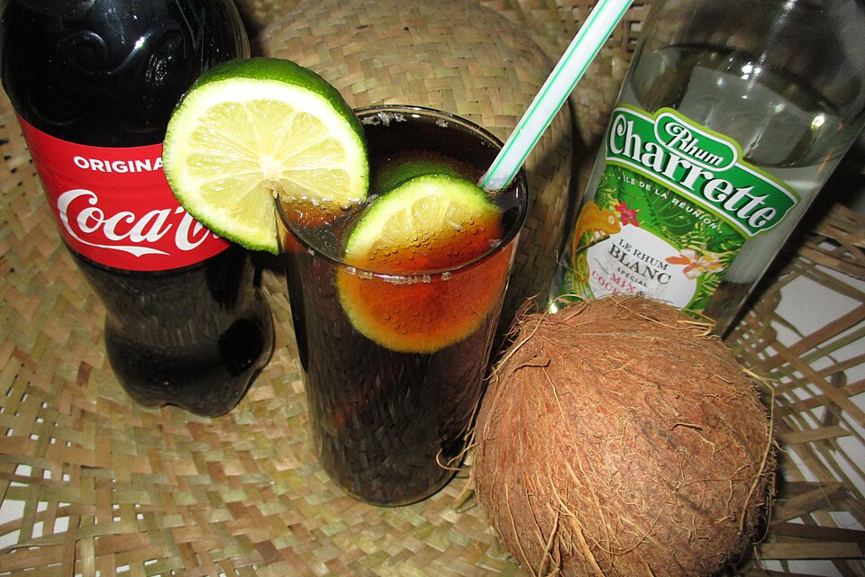

Image by Arnaud 25 (modified) - Wikimedia Commons - CC-BY-SA-4.0
Cuba Libre(Rum and Coke)
The Cuba Libre is a Cuban cocktail made by mixing cola with rum and lime juice. It is generally prepared using aged rum, cola, lime, salt, mineral water, and sugar.
Ingredients
- 50 ml white rum
- 100 ml cola
- 5–6 drops of lemon juice
Instructions
- Fill the glass with ice cubes: Avoid crushed ice, especially for this cocktail. Don't be shy with the amount of ice. While we don't want the drink to get watered down, the fact is that this cocktail packs a real punch. Don't worry, though—it’s not the kind of drink that sits in your hand for long.
- Pour in the rum: If you don't have a way to measure the suggested amount, pour two-thirds of the glass full of rum. Remember, white rum is the best choice for a Cuba Libre.
- Top up with cola: We use tuKola, the national cola brand. On the island, you might come across other cola brands like Ironbeer, Dely, Star, or Fiesta Cola, but we don't really recommend them.
- Add a few drops of lime juice: Always use fresh juice; avoid synthetic versions. *Criollo* limes are the best.
- Garnish your cocktail: Cut a lime slice, place it in the glass, and you're all set! You’ll have the perfect Cuba Libre. You can add a straw if you like, though it’s not necessary.
Home